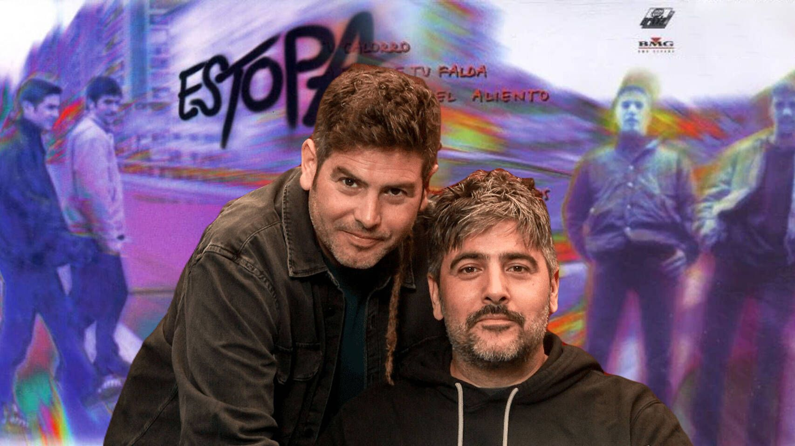

Sobre el dúo
Estopa es un dúo español de rumba catalana formado por los hermanos David y José Muñoz en 1999. Originarios de Cornellà de Llobregat, Barcelona, saltaron a la fama con su primer disco homónimo que incluía himnos como "La raja de tu falda" o "Como camarón". Su estilo es único, mezclando la rumba con el rock y el pop, lo que ellos mismos denominan como "Rumba-Rock". A lo largo de más de dos décadas de carrera, han vendido millones de discos y han recibido numerosos premios, convirtiéndose en uno de los grupos más queridos de la música española. Con letras cotidianas, canallas y llenas de sentimiento, los hermanos Muñoz han conseguido conectar con varias generaciones de fans, manteniendo siempre su esencia humilde y su característico sonido de guitarra española.